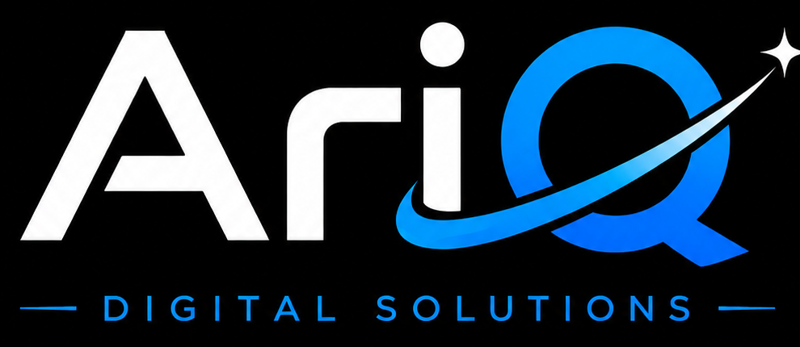
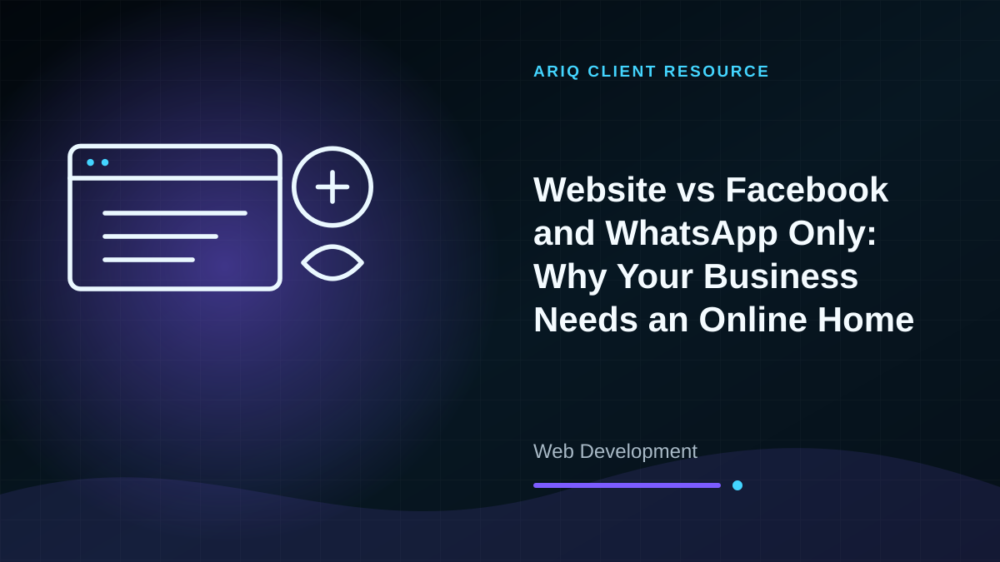
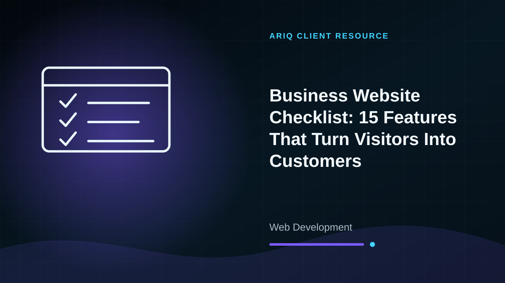

Business Websites
Responsive websites with service pages, contact forms, WhatsApp integration, maps, galleries, and clear calls to action.

Get StartedProfessional Online Presence
Modern websites and browser-based business systems designed to build trust, generate enquiries, and simplify your operations.
What We Provide
From consultation to delivery and after-sales support, AriQ keeps the process clear and practical.
Responsive websites with service pages, contact forms, WhatsApp integration, maps, galleries, and clear calls to action.
Custom systems such as POS, stock management, reporting, customer portals, and workflow tools.
Domain connection, secure hosting, business email guidance, deployment, and website configuration.
Content updates, backups, security checks, performance improvements, and ongoing technical support.
Our Process
We understand your goals, audience, required pages, features, branding, and content.
We create a responsive interface, build the functionality, and share progress for review.
After approval, we publish the website, test it on phones and computers, and provide support.
Client Resources
Compare options, understand the trade-offs and prepare the right questions before requesting a quotation.

Web Development
Social media is valuable, but a business website gives you ownership, credibility, searchable information and a better path from enquiry to sale.
Read detailed guide →
Web Development
Use this practical checklist to improve trust, mobile usability, search visibility and the number of website visitors who contact your business.
Read detailed guide →Talk To AriQ
Send us your requirements and location. We will recommend the most suitable solution and provide a clear quotation.